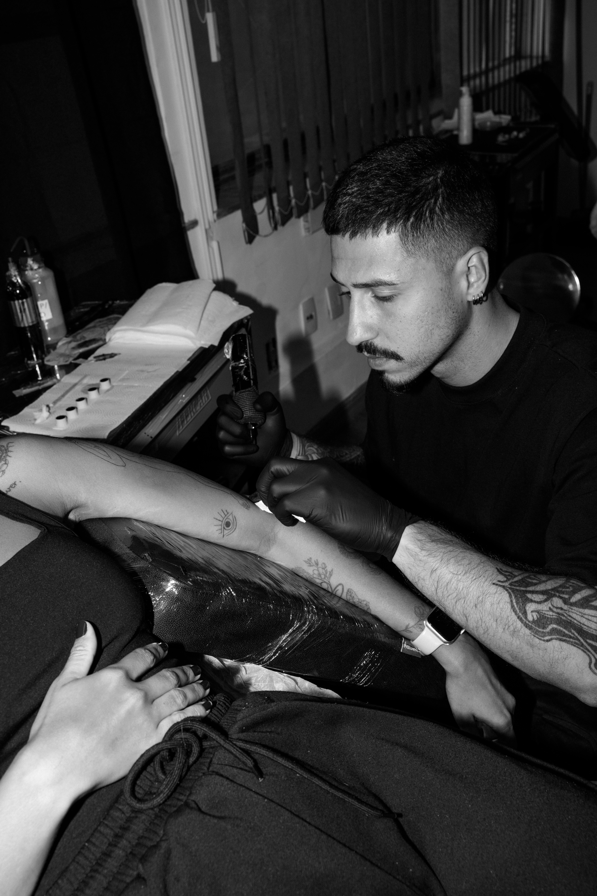
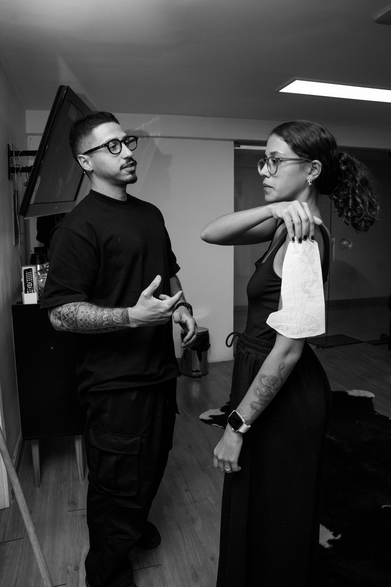
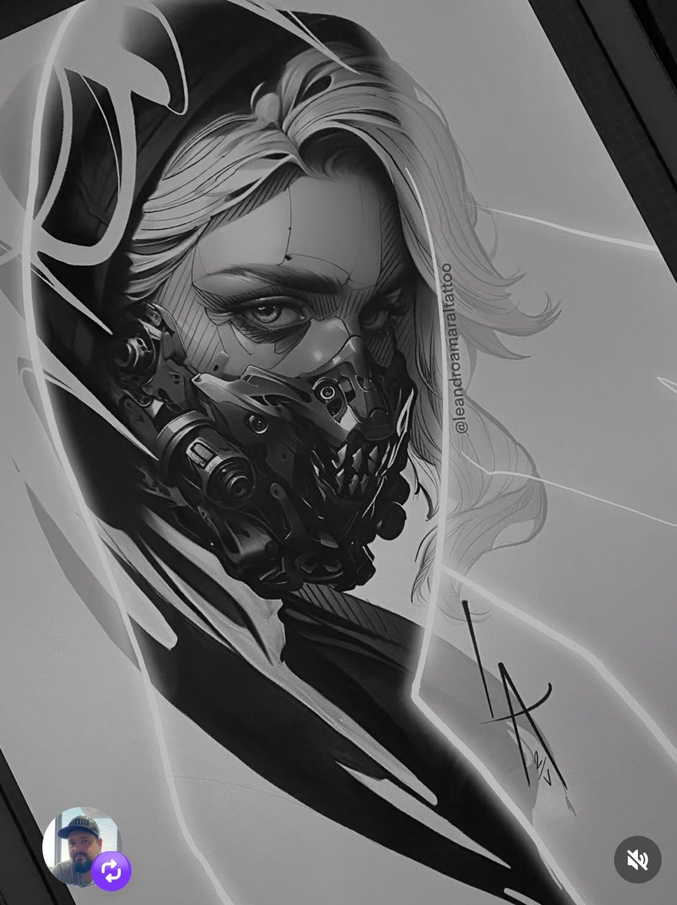

O ARTISTA

Ygor é conhecido pelo realismo preto e cinza, marcado por sombras suaves, contrastes equilibrados e composições que valorizam o fluxo natural do corpo. Suas tatuagens são desenvolvidas para envelhecer de forma sólida, mantendo presença, leitura e harmonia ao longo do tempo.
Seu trabalho frequentemente explora retratos, imagens simbólicas e elementos
narrativos, combinando técnica e direção artística em peças com identidade
própria. Cada trabalho é desenvolvido com atenção à composição, garantindo
que textura, contraste e detalhes reforcem a história da peça sem comprometer
sua leitura.
A relação entre design e anatomia define a composição, criando tatuagens com
fluxo, equilíbrio e presença, pensadas para se integrar ao corpo de forma
natural e atemporal.
